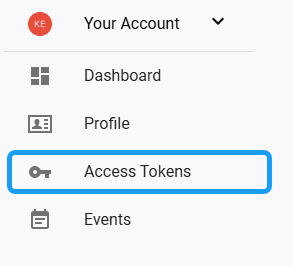
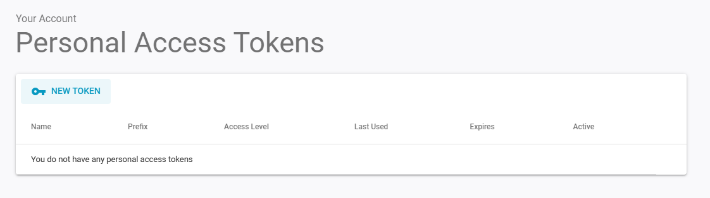
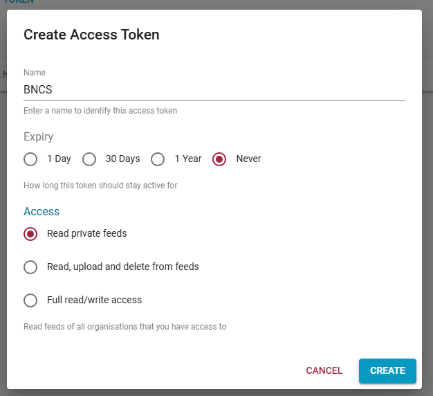
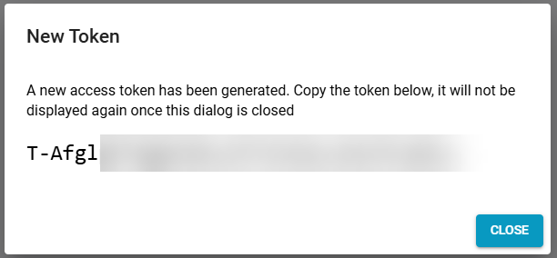
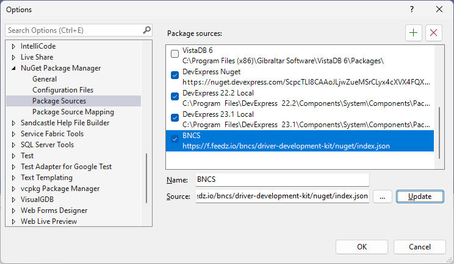

|
<< Click to Display Table of Contents >> Navigation: Basics > Obtaining the Library > Adding NuGet Repository |
In order to use the private NuGet repository within Visual Studio, a private access key first needs to be generated. Once signed up for a feedz.io account, select the Access Tokens tab from the menu under Your Account:

This will open a list of the access tokens associated with your account, which should initially be empty:

Click on the New Token button to open the Create Access Token form:

Give the access token an appropriate name, select the maximum available expiry period and choose the access rights (some access rights may not be available to external users) Upon clicking the Create button the access token will be generated and displayed. Be sure to copy the generated access token as this will be the only occasion when it will be displayed.

To add the repository into Visual Studio, first open the Options dialogue (Tools/Options) and locate the NuGet Package Manager option in the list:

Press the green + button to add a new source to the list, enter an appropriate name and the URL of the feed as the source:
https://f.feedz.io/bncs/driver-development-kit/nuget/index.json
Click Update to save the changes and then on OK to exit the dialogue. On the first occasion the new repository is accessed, Visual Studio will prompt for access credentials at which point you should enter your email address as the username and the access token generated above as password.
If you receive permission denied errors after following these steps, please refer to the steps in the next section.